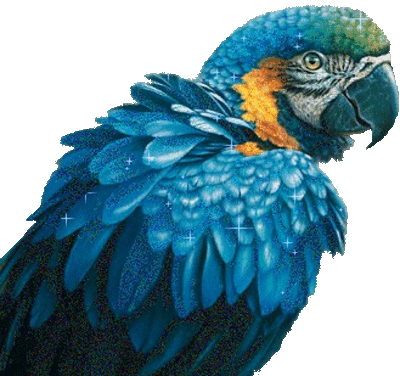

El parque turístico Nueva Loja se encuentra en la ciudad del mismo nombre dentro del cantón Lago Agrio en la provincia de Sucumbíos. Comprende un área natural protegida de aproximadamente 30,9 hectáreas. Desde su inauguración, el 26 de mayo de 2015, recibe mensualmente cerca de 13.000 turistas que ingresan de manera gratuita a sus diferentes atractivos naturales como: senderos, juegos de altura, miradores, centros de intercambio cultural y un herpetario. El Ministerio de Turismo en aquel entonces, dirigió un macroproyecto que colocaría a la ciudad de Nueva Loja como una potencia turística a nivel país.Se convirtió en un refugio para especies rescatadas. Por muchos años esta zona de la urbe no fue explotada por el temor de las graves consecuencias a la naturaleza que un mal manejo significaría. Sin embargo, gracias a las nuevas tecnologías innovadoras que preservan el medio ambiente por encima de cualquier cosa.
Actividad recreativa de turismo que ayuda a la salud de las personas
Se puede realizar la observación de las especies que existen en esta zona
Las Fotos son aceptadas siempre y cuando sea a una hora adecuada y sin el uso de flashes al momento de realizar la foto